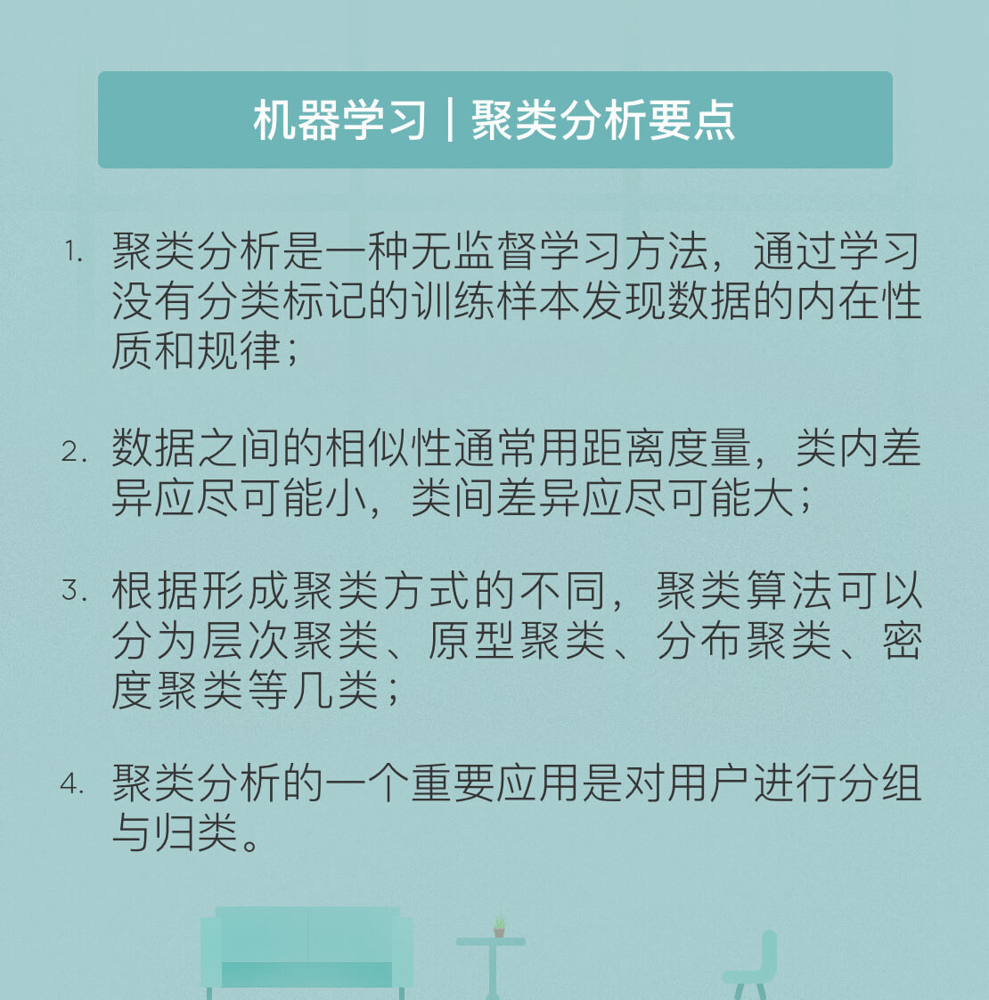

- 00 开篇词 人工智能：新时代的必修课.md.html
- 01 数学基础 九层之台，起于累土：线性代数.md.html
- 02 数学基础 月有阴晴圆缺，此事古难全：概率论.md.html
- 03 数学基础 窥一斑而知全豹：数理统计.md.html
- 04 数学基础 不畏浮云遮望眼：最优化方法.md.html
- 05 数学基础 万物皆数，信息亦然：信息论.md.html
- 06 数学基础 明日黄花迹难寻：形式逻辑.md.html
- 07 机器学习 数山有路，学海无涯：机器学习概论.md.html
- 08 机器学习 简约而不简单：线性回归.md.html
- 09 机器学习 大道至简：朴素贝叶斯方法.md.html
- 10 机器学习 衍化至繁：逻辑回归.md.html
- 11 机器学习 步步为营，有章可循：决策树.md.html
- 12 机器学习 穷则变，变则通：支持向量机.md.html
- 13 机器学习 三个臭皮匠，赛过诸葛亮：集成学习.md.html
- 14 机器学习 物以类聚，人以群分：聚类分析.md.html
- 15 机器学习 好钢用在刀刃上：降维学习.md.html
- 16 人工神经网络 道法自然，久藏玄冥：神经网络的生理学背景.md.html
- 17 人工神经网络 一个青年才俊的意外死亡：神经元与感知器.md.html
- 18 人工神经网络 左手信号，右手误差：多层感知器.md.html
- 19 人工神经网络 各人自扫门前雪：径向基函数神经网络.md.html
- 20 人工神经网络 看不见的手：自组织特征映射.md.html
- 21 人工神经网络 水无至清，人莫至察：模糊神经网络.md.html
- 22 深度学习 空山鸣响，静水流深：深度学习概述.md.html
- 23 深度学习 前方有路，未来可期：深度前馈网络.md.html
- 24 深度学习 小树不修不直溜：深度学习中的正则化.md.html
- 25 深度学习 玉不琢不成器：深度学习中的优化.md.html
- 26 深度学习 空竹里的秘密：自编码器.md.html
- 27 深度学习 困知勉行者勇：深度强化学习.md.html
- 28 深度学习框架下的神经网络 枯木逢春：深度信念网络.md.html
- 29 深度学习框架下的神经网络 见微知著：卷积神经网络.md.html
- 30 深度学习框架下的神经网络 昨日重现：循环神经网络.md.html
- 31 深度学习框架下的神经网络 左右互搏：生成式对抗网络.md.html
- 32 深度学习框架下的神经网络 三重门：长短期记忆网络.md.html
- 33 深度学习之外的人工智能 一图胜千言：概率图模型.md.html
- 34 深度学习之外的人工智能 乌合之众的逆袭：集群智能.md.html
- 35 深度学习之外的人工智能 授人以鱼不如授人以渔：迁移学习.md.html
- 36 深度学习之外的人工智能 滴水藏海：知识图谱.md.html
- 37 应用场景 你是我的眼：计算机视觉.md.html
- 38 应用场景 嘿, Siri：语音处理.md.html
- 39 应用场景 心有灵犀一点通：对话系统.md.html
- 40 应用场景 数字巴别塔：机器翻译.md.html
- 一键到达 人工神经网络复习课.md.html
- 一键到达 应用场景复习课.md.html
- 一键到达 数学基础复习课.md.html
- 一键到达 机器学习复习课.md.html
- 一键到达 深度学习之外的人工智能复习课.md.html
- 一键到达 深度学习复习课.md.html
- 一键到达 深度学习框架下的神经网络复习课.md.html
- 推荐阅读 我与人工智能的故事.md.html
- 新书 《裂变：秒懂人工智能的基础课》.md.html
- 直播回顾 机器学习必备的数学基础.md.html
- 第2季回归 这次我们来聊聊机器学习.md.html
- 结课 溯洄从之，道阻且长.md.html
- 课外谈 “人工智能基础课”之二三闲话.md.html
- （课外辅导）人工神经网络 拓展阅读参考书.md.html
- （课外辅导）数学基础 拓展阅读参考书.md.html
- （课外辅导）机器学习 拓展阅读参考书.md.html
- （课外辅导）深度学习 拓展阅读参考书.md.html
- 捐赠
14 机器学习 物以类聚，人以群分：聚类分析
20世纪40年代，美国心理学家罗伯特·泰昂和雷蒙德·卡泰尔借鉴人类学中的研究方法，提出“聚类分析”的概念，通过从相关矩阵中提取互相关的成分进行性格因素的研究。随着时间的推移，聚类分析的应用范围越来越广泛，逐渐演化成一种主要的机器学习方法。
聚类分析是一种无监督学习方法，其目标是学习没有分类标记的训练样本，以揭示数据的内在性质和规律。具体来说，聚类分析要将数据集划分为若干个互不相交的子集，每个子集中的元素在某种度量之下都与本子集内的元素具有更高的相似度。
用这种方法划分出的子集就是“聚类”（或称为“簇”），每个聚类都代表了一个潜在的类别。分类和聚类的区别也正在于此：分类是先确定类别再划分数据；聚类则是先划分数据再确定类别。
聚类分析本身并不是具体的算法，而是要解决的一般任务，从名称就可以看出这项任务的两个核心问题：一是如何判定哪些样本属于同一“类”，二是怎么让同一类的样本“聚”在一起。
解决哪些样本属于同一“类”的问题需要对相似性进行度量。无论采用何种划定标准，聚类分析的原则都是让类内样本之间的差别尽可能小，而类间样本之间的差别尽可能大。度量相似性最简单的方法就是引入距离测度，聚类分析正是通过计算样本之间的距离来判定它们是否属于同一个“类”。根据线性代数的知识，如果每个样本都具有\(N\)个特征，那就可以将它们视为\(N\)维空间中的点，进而计算不同点之间的距离。
作为数学概念的距离需要满足非负性（不小于0）、同一性（任意点与其自身之间的距离为0）、对称性（交换点的顺序不改变距离）、直递性（满足三角不等式）等性质。在聚类分析中常用的距离是“闵可夫斯基距离”，其定义为
\[ \\text{dist}_{\\text{mk}} (\\mathbf{x}_i, \\mathbf{x}_j) = (\\sum\\limits_{n = 1}^N | x_{in} - x_{jn} | ^ p) ^ {\\frac{1}{p}} \]
式中的\(p\)是个常数。当\(p = 2\)时，闵可夫斯基距离就变成了欧式距离，也就是通常意义上的长度。
确定了“类”的标准之后，接下来就要考虑如何让同一类的样本“聚”起来，也就是聚类算法的设计。目前，公开发表的聚类算法已经超过了100种，但无监督学习的特性决定了不可能存在通用的聚类算法。根据应用场景的差别，不同算法在组成聚类的概念以及有效找到聚类的方法上也会有所区别。针对某种模型设计的算法在其他模型的数据集上表现的一塌糊涂也不是什么新鲜事。接下来我介绍的就是几类最主要的聚类算法及其实例。
层次聚类又被称为基于连接的聚类，其核心思想源于样本应当与附近而非远离的样本具有更强的相关性。由于聚类生成的依据是样本之间的距离，因而聚类的特性可以用聚类内部样本之间的距离尺度来刻画。聚类的划分是在不同的距离水平上完成的，划分过程就可以用树状图来描述，这也解释了”层次聚类”这个名称的来源。
层次聚类对数据集的划分既可以采用自顶向下的拆分策略，也可以采用自底向上的会聚策略，后者是更加常用的方法。在采用会聚策略的层次聚类算法中，数据集中的每个样本都被视为一个初始聚类。算法每执行一步，就将距离最近的两个初始聚类合并，这个过程将一直重复到合并后的数目达到预设数为止。
根据距离计算方式的不同，会聚算法可以分为单链接算法、全链接算法和均链接算法等。单链接算法利用的是最小距离，它由两个不同聚类中相距最近的样本决定；全链接算法利用的是最大距离，它由两个不同聚类中相距最远的样本决定；均链接算法利用的是平均距离，它由两个不同聚类中的所有样本共同决定。虽然存在特定的快速算法，但会聚策略的计算复杂度依然较高。相比之下，拆分策略更加复杂，在此就不做介绍了。
原型聚类又被称为基于质心的聚类，其核心思想是每个聚类都可以用一个质心表示。原型聚类将给定的数据集初始分裂为若干聚类，每个聚类都用一个中心向量来刻画，然后通过反复迭代来调整聚类中心和聚类成员，直到每个聚类不再变化为止。
k均值算法是典型的原型聚类算法，它将聚类问题转化为最优化问题。具体做法是先找到\(k\)个聚类中心，并将所有样本分配给最近的聚类中心，分配的原则是让所有样本到其聚类中心的距离平方和最小。显然，距离平方和越小意味着每个聚类内样本的相似度越高。但是这个优化问题没有办法精确求解，因而只能搜索近似解。\(k\)均值算法就是利用贪心策略，通过迭代优化来近似求解最小平方和的算法。
k均值算法的计算过程非常直观。首先从数据集中随机选取\(k\)个样本作为\(k\)个聚类各自的中心，接下来对其余样本分别计算它们到这\(k\)个中心的距离，并将样本划分到离它最近的中心所对应的聚类中。当所有样本的聚类归属都确定后，再计算每个聚类中所有样本的算术平均数，作为聚类新的中心，并将所有样本按照\(k\)个新的中心重新聚类。这样，“取平均-重新计算中心-重新聚类”的过程将不断迭代，直到聚类结果不再变化为止。
大多数k均值类型的算法需要预先指定聚类的数目\(k\)，这是算法为人诟病的一个主要因素。此外，由于算法优化的对象是每个聚类的中心，因而k均值算法倾向于划分出相似大小的聚类，这会降低聚类边界的精确性。
分布聚类又被称为基于概率模型的聚类，其核心思想是假定隐藏的类别是数据空间上的一个分布。在分布聚类中，每个聚类都是最可能属于同一分布的对象的集合。这种聚类方式类似于数理统计中获得样本的方式，也就是每个聚类都由在总体中随机抽取独立同分布的样本组成。其缺点则在于无法确定隐含的概率模型是否真的存在，因而常常导致过拟合的发生。
聚类分析的任务原本是将数据划分到不同的聚类中，可如果我们将样本看作观察值，将潜在类别看作隐藏变量，那么就可以逆向认为数据集是由不同的聚类产生的。在这个前提下，基于概率模型的聚类分析的任务是推导出最可能产生出已有数据集的\(k\)个聚类，并度量这\(k\)个聚类产生已有数据集的似然概率。
基于概率模型的聚类实质上就是进行参数估计，估计出聚类的参数集合以使似然函数最大化。期望极大算法（Expectation Maximization algorithm）是典型的基于概率模型的聚类方法。EM算法是一种迭代算法，用于含有不可观察的隐变量的概率模型中，在这种模型下对参数做出极大似然估计，因而可以应用在聚类分析之中。
EM算法执行的过程包括“期望”和“最大化”两个步骤。将待估计分布的参数值随机初始化后，期望步骤利用初始参数来估计样本所属的类别；最大化步骤利用估计结果求取当似然函数取得极大值时，对应参数值的取值。两个步骤不断迭代，直到收敛为止。
密度聚类又被称为基于密度的聚类，其核心思想是样本分布的密度能够决定聚类结构。每个样本集中分布的区域都可以看作一个聚类，聚类之间由分散的噪声点区分。密度聚类算法根据样本密度考察样本间的可连接性，再基于可连接样本不断扩展聚类以获得最终结果。
最流行的基于密度的聚类方法是利用噪声的基于密度的空间聚类（Density-Based Spatial Clustering of Applications with Noise），简称 DBSCAN。DBSCAN通过将距离在某一个阈值之内的点连接起来而形成聚类，但连接的对象只限于满足密度标准的点。\(\\epsilon\) -邻域这一概念给出的对邻域的限制，密度的可连接性则通过密度直达关系、密度可达关系、密度相连关系等一系列标准定义，根据这些概念形成的聚类就是由密度可达关系导出的最大的密度相连样本集合。
根据思想的不同，聚类方法主要包括以上的四种类型，每种类型上也有其典型算法。受篇幅的限制，关于每种典型算法我并没有展开详细的阐述，你可以查阅相关文献以了解这些算法的细节。除了介绍的这些传统方法之外，现代聚类方法还包括谱聚类和模糊聚类等等，在此就不做介绍了。
正所谓“物以类聚，人以群分”，聚类分析的一个重要应用就是用户画像。在商业应用中判别新用户的类型时，往往要先对用户进行聚类分析，再根据聚类分析的结果训练分类模型，用于用户类型的判别。聚类使用的特征通常包括人口学变量、使用场景、行为数据等。
今天我和你分享了机器学习基本算法之一的聚类分析的基本原理，其要点如下：
- 聚类分析是一种无监督学习方法，通过学习没有分类标记的训练样本发现数据的内在性质和规律；
- 数据之间的相似性通常用距离度量，类内差异应尽可能小，类间差异应尽可能大；
- 根据形成聚类方式的不同，聚类算法可以分为层次聚类、原型聚类、分布聚类、密度聚类等几类；
- 聚类分析的一个重要应用是对用户进行分组与归类。
由于其无监督学习的特性，在评估聚类方法时也就不存在绝对客观的标准。尤其是在数据多样化、高维化、非均衡化的趋势下，评价聚类方法的难度甚至超出了设计聚类方法的难度。那么在评价聚类方法时应该考虑哪些因素呢？
欢迎发表你的观点。

© 2019 - 2023 Liangliang Lee. Powered by gin and hexo-theme-book.